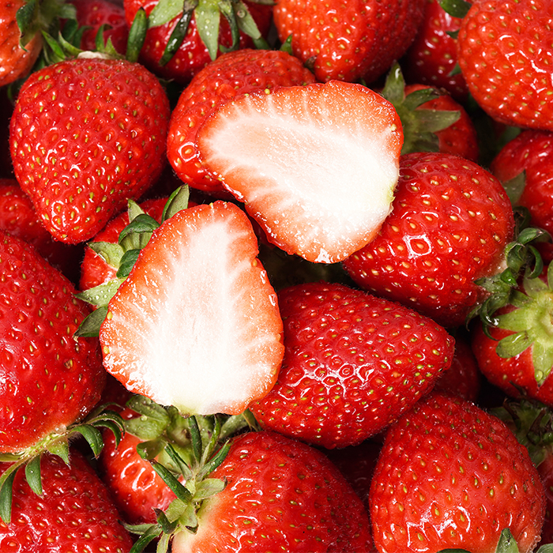
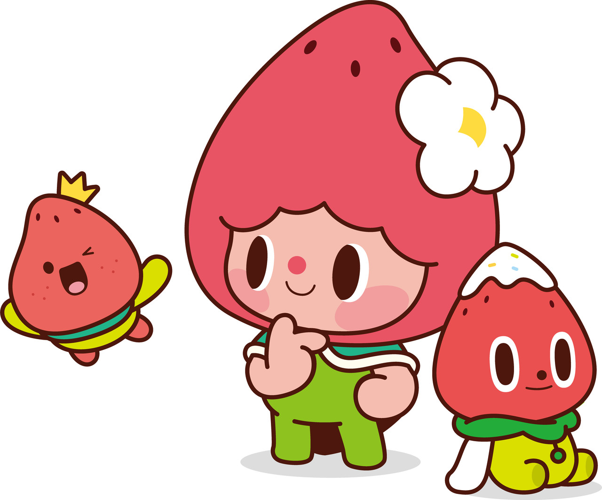

대한민국 딸기 산업의 중심, 논산 딸기 축제🍓

논산은 전국적인 딸기 주산지로서 안정적인 생산 기반과 유통 체계를 갖추고 있으며, 이를 바탕으로 농업, 가공, 관광이 연계된 산업형 축제로 논산딸기축제를 운영하고 있습니다. 축제는 딸기 판매 및 시식, 체험 프로그램, 공연 및 전시 행사 등 구성되어있고 지역 농가와 소상공인이 직접 참여하는 구조로 추진되고 있습니다.

논산문화관광재단은 딸기 축제의 경쟁력 강화를 위한 브랜드 ip 구축의 일환으로 마스코트를 공식 캐릭터로 확정했습니다. 마스코트는 스윗벨, 비타벨, 킹스벨로 구성된 딸기 삼총사이고, 달콤하고 싱그러운 딸기 이미지를 친근하고 밝게 구현해 어린이부터 성인까지 호불호 없도록 설계했습니다.
현재 2026년도 딸기 축제는 마무리되었습니다. 내년을 기대해주세요!
2026년 3월 26(목) ~ 2026년 3월 29일(일)까지